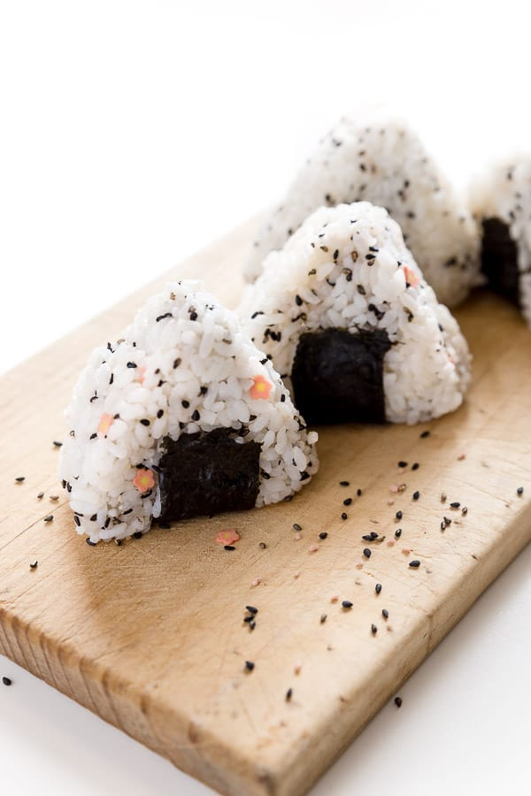

Onigiri Recipe

Description
Onigiri are known as Japanese rice ball snacks made from cooked or steamed sushi rice,
furikake seasonings (and sometimes tasty hidden fillings), wrapped in a seaweed wrapper.
Ingredients
- Rice - it is recommended to use sticky rice. Cook it in a rice cooker,
stove etc.
- Furikake - this is a type of japanese seasoning usually sprinkled over
cooked rice.
- Nori - this is a flat seaweed wrapper also used to wrap sushi.
Go Back